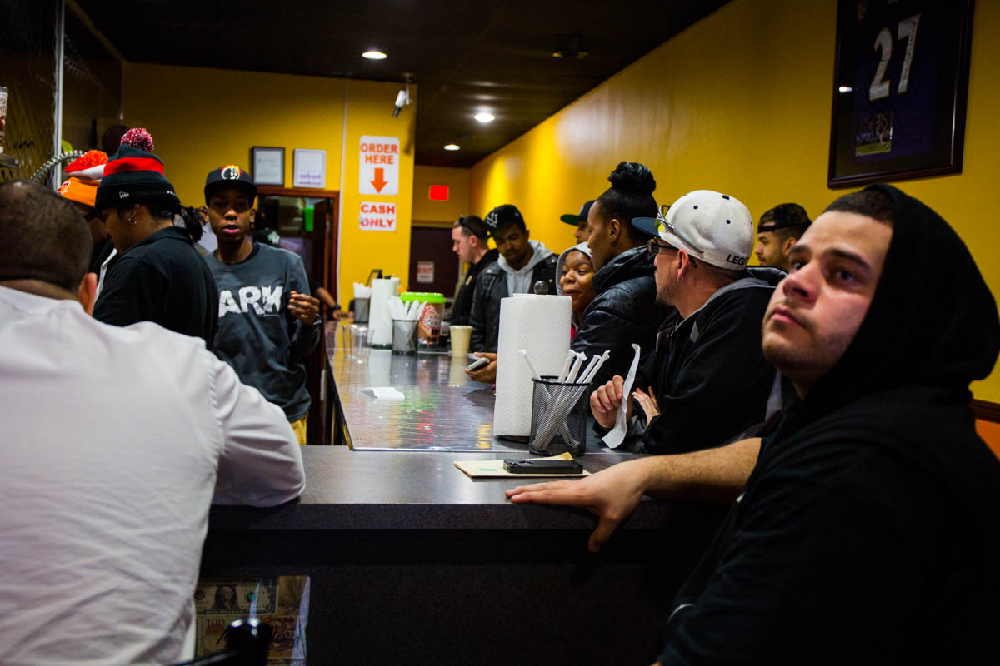
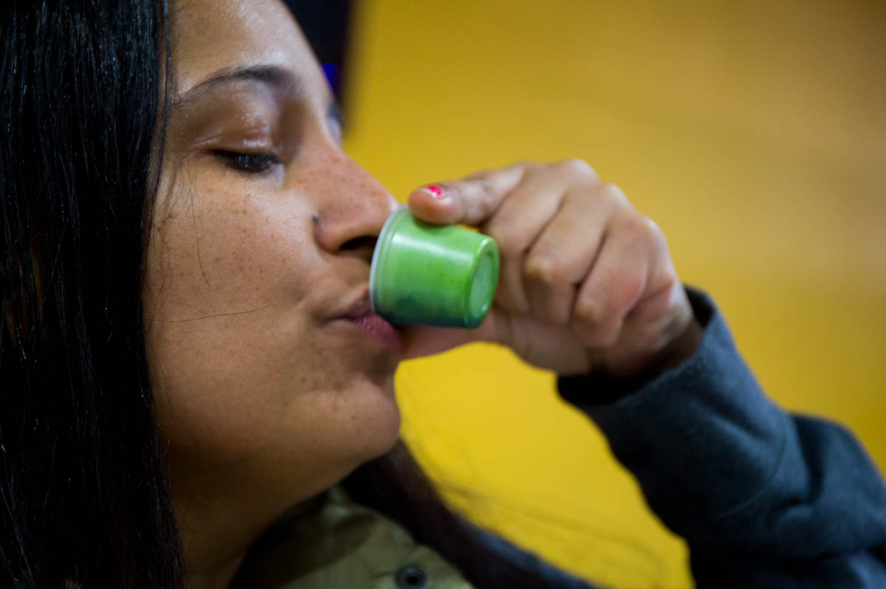
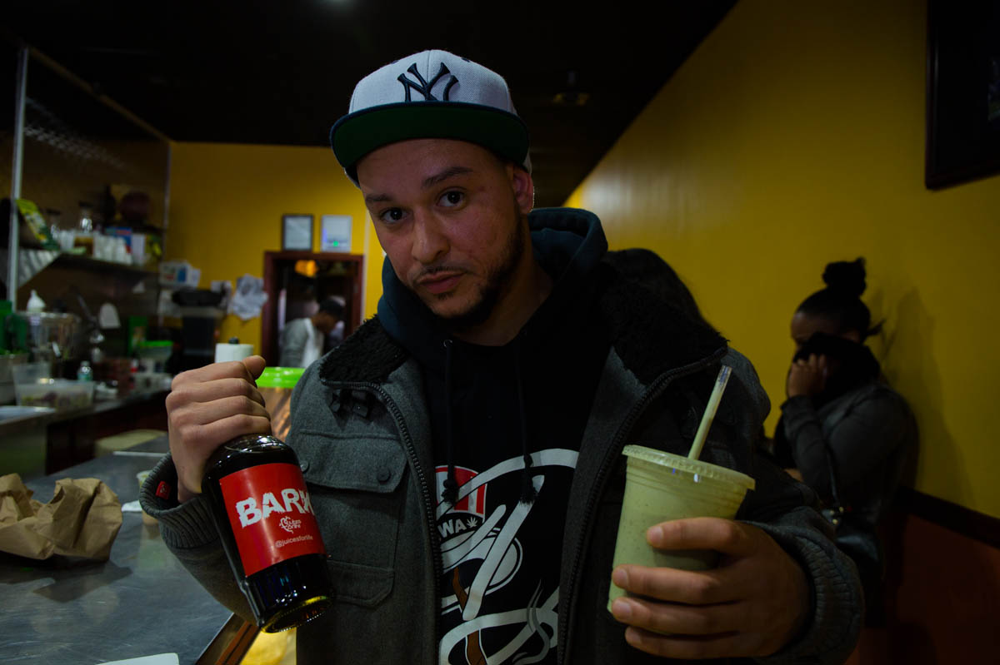

Wedged between a small unlikely church and a newly opened cafe, Juices for Life strikes a different tune in a neighborhood saturated with bodegas, liquor stores and fast-food spots. Located on 1026 Castle hill Avenue, Juices for Life juice bar is a popular hub where residents can get their juice fix.

A Juice bar on Castle Hill Avenue
by Rahima Gambo
On a Sunday afternoon the bar is packed. The noise from the blenders mix with music from the radio and customers ordering specials like the “Weight Loss” a mixture of grapefruit, lemon and grapes and the “Yonkers” a sour mix of mango, strawberries and pears.

Only Fresh organic fruits , are used to make juices and smoothies that are sold at really affordable prices. A special like the popular "Yonkers" a mixture of lemon, pineapple and orange is $6 dollars.

We keep our customers happy with fresh fruits and vegetables
- Zeb, Juices for Life bartender
The South Bronx has been branded by the US Department of Agriculture, as a “Food Desert”, defined as a low income area lacking access to affordable and nutritious food. Yet this juice bar is rebelling against the label.

People care about health more
- Zeb, Juices for Life bartender

I love juices. before this bar opened I had to go to Harlem to get my juices.

It's about healthy choices being available on the block

Wheatgrass shots are very popular here

Its a Lifestyle. Some people take wheatgrass others take coffee
The bar is doing so well, the owners, famous Bronx rapper Styles P, Trinidadian-born juicing expert Nigel Rollocks and Leo a local entrepreneur, are opening another branch for Bronx residents